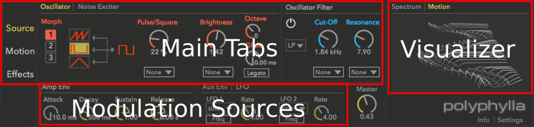
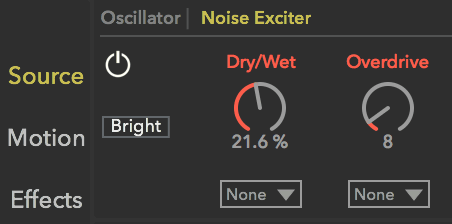
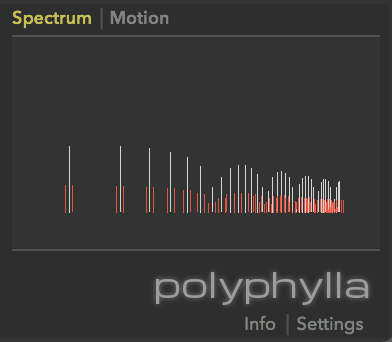

Reference Manual
1. What is Polyphylla?
Polyphylla is an eight-voice additive synthesizer with up to 120 overtones per voice. It enables users to intuitively design and sculpt sounds with a unique visual interface. The user shapes the overtones of the sound by drawing a Motion Motif directly into the plugin window. This Motif is further refined by fractal-inspired algorithms to create lush, organic and evolving sounds.
2. Source Tab
Defines the fundamental character of the sound
The source sound can be created with the Oscillator and can be optionally modified by the Noise exciter.
2.1 Oscillator Modes
The Oscillator offers three ways to create the source sound:
2.1.1 Morph
Morphs between fixed waveforms - suitable for basses, strings and pads.
1. This oscillator mode morphs between a square wave on the right and your selection of one of three wave types on the left (sawtooth, pulse, or triangle).
2. Use the dial on the right side to change the proportion of the waveform of your choice and a square wave. For example, when a Sawtooth is selected, with the Saw/Square Ratio dial at 30%, the sound is composed of 30% of a Sawtooth and 70% of a Square.
Tip: modulate the value of the ratio dial to create changing timbre. To learn more about modulation, see the Modulation section.
2.1.2 Atonal
Randomly choose inharmonic overtones - suitable for drone, pad, or bell-like sounds.
Atonal uses 5 partials - one fundamental frequency and 4 overtones. The fundamental frequency is fixed, while the frequency (represented as Harmony Ratio) of the 4 overtones can be detuned freely with the detune dial.
Harmony Ratio
The Harmony Ratio of a partial is calculated in proportion to the fundamental frequency. For example, if the fundamental frequency is 440 Hz, and the partial frequency is 880 Hz, the partial's Harmony Ratio is 2.
There are harmonic and inharmonic partials. Harmonic partials are partials with a whole-numbered (1, 2, 3.. etc) Harmony Ratio. While inharmonic partials are with non whole-numbered Harmony ratio (ex. 1.23, 1.33, etc). If the fundamental frequency is 220 Hz, then a partial of 440 Hz is a harmonic partial, while 550 Hz is an inharmonic partial.
With pitched music instruments like piano, guitar, or clarinet, they are composed of mainly harmonic partials. And bell or percussions are made of inharmonic partials.
| 1. Harmony Ratio/Overtone Frequency | The number displayed above each Detune Dial are the Harmony Ratio of the overtones, which can be understood as the frequency of the overtones - when the number gets higher, the overtone frequency increases. The closer the ratio is to a whole number (ie. 1, 2, 3, etc..), the more harmonious the overall tone would be. See Harmony Ratio for more information. |
| 2. Detune Dial | The dial detunes the overtone frequency within one octave. |
| 3. Spread | The minimum distance between overtones. Use higher value to generate more open and harmonic tones. Use lower value to generate more experimental and drony tones. |
| 4. Overtones Randomizer | Randomizes the Harmony Ratio of the 4 overtones. |
| 5. Harmony Ratio Presets | Click to apply Harmony Ratio presets for the overtones. |
2.1.3 Manual Mode
Click and drag to adjust the amplitude of the partials
2.2 Oscillator Settings
| 2.2.1 Brightness | This changes the tone color. Higher value makes the tone brighter, and lower value makes the tone darker. |
| 2.2.2 Octave | Octave - Transposes the tuning up or down in octave increments. |
| 2.2.3 Glide | The time taken to glide from one note to another. With Legato enabled, gliding will only occur if the second note is played before the first note is released. |
2.3 Noise Exciter

With the Noise Exciter the source sound can be enriched with non-deterministic components of natural sounds, such as the noise generated by sliding a bow against a string, wind sounds and the noise components of percussive sounds.
| 1. Noise Exciter Type Switch | Click to toggle the tone of the noise between Bright and Warm |
| 2. Dry/Wet Mix | The balance between the dry oscillator signal and the modulated noise signal. |
| 3. Overdrive | Distort the noise further |
2.4 Oscillator Filter and Noise Filter
Both the oscillator and the noise exciter have a dedicated filter. The low-pass filter is the Diode filter - a Moog style ladder filter, which has a warm/colorful character.
2.4.1. Cut-Off Frequency
The frequency at which the filter will begin to attenuate signals
2.4.2. Resonance
Emphasize the frequency lying near the filter's cut-off frequency
3. Motion Tab
3.1 Motion Effects
In the Motion Tab a Motion Effect is created and applied to the source sound. The user draws the Motion Motif into the motif editor and the resulting motion effect is applied individually to each partial. As the sound plays the Motion Visualizer provides a visualization of it. Polyphylla offers 4 Motion Effects:
3.1.1 Sweep
Offsets the start time of the Motion Motif for each partial
Amount
Global dial for all Sweep Modes. It scales the amount of offset time applied to all partials. Higher value results in more dramatic offset times
Sweep Modes
- 1. Down - linearly increase the offset time as the partial frequency (ie. the Harmony Ratio) increases
- 2. Up - linearly decrease the offset time as the partial frequency (ie. the Harmony Ratio) increases
- 3. Curve - non-linearly offset partials. The offset amount changes as a curve. The shape of the curve can be modified by Phase and Density
- Phase - shift the phase of the curve, which changes the offset amount applied to partials
- Density - set the density (also called period or wavelength) of the sweep curve. Lower values result in more dramatic changes across the partial spectrum, while higher values result in smoother changes.
- 4. Random - randomly offset partials.
- Seeds - Each variety is a different set of random values to offset partials
- Offset - Change the mapping between the offset amounts and the partials
3.1.2 Attractor
Attractor - stretches and bends the Motion Motif with an attractor.
- 1. Attractor Location X-Y Control - click and drag along to change the location of the attractor. The horizontal/vertical axis represent playback time/magnitude respectively.
- 2. Offset - this changes the location of the attractor among partials
3.1.3 Deform
Semi-randomly deform the Motion Motif for for each partial.
| Deform | The amount of deform applied to all partials |
| Randomize | How random the original Motion Motif is deformed. High value results in more dramatic timbre movement, while use low value to create more subtle, organic timbral changes. |
3.1.4 Drift
Smoothly change the magnitude of each individual partial over time
- Speed - How quickly the magnitude of individual partials changes over time
3.2 Motion Motif Editor
Click and drag to draw a curve as a Motion Motif. Depending on the Motion Effect in use, it will be applied differently to each partial.
| Presets | Factory presets for the Motion Motif |
| Loop Mode | This sets whether to loop the Motion Envelope for the duration of note, and if so, how. |
| Speed | How many cycles per second to play back the Motion Effect. |
4. Effects
Add effects like harmony modulation and spatialization
4.1 Harmony Effect
| Unison | Fatten up the sound by adding two slightly detuned partials for each existing one. |
| Detune | Adjust the detune amount to the partials colored red in the Spectrum View. |
| Wet | The balance between the original partials and the detuned partials. In the Spectrum View, the original and detuned partials are colored in white and red respectively. |
| Interval | Detune harmonics matching the specified interval. |
| Detune | Adjust the detune amount to the partials color red in the Spectrum View. |
| Target | Detune All/Odd/Even/Octave/Fifth partials.
|
| Volume | Adjust the volume of the detuned partials. |
| Mask | detune partials covered by the mask |
| Detune | Adjust the detune amount to the partials color red in the Spectrum View. |
| Size | Specifies the width of the mask. With higher value to detune more partials. |
| Offset | Shift the starting position of the mask. |
| Random | randomly detune partials. |
| Detune | Adjust the detune amount to the partials color red in the Spectrum View. |
| Smoothness | How smooth the partials are detuned over time. |
| Threshold | Detunes any partials with volume greater than the minimum value |
| Detune | Adjust the detune amount to the partials color red in the Spectrum View. |
| Minimum Volume | Detune only partials with volume higher than the specified amount |
4.2 Miscellaneous Effects
4.2.1 Ring Modulator
Adding extra frequencies to the original signal. good for adding extra high frequencies for percussive sounds.
| Dry/Wet Mix | The balance between the dry signal and the signal processed by Ring Modulator. |
| Frequency | The frequency that will be added to and subtracted from the input signal. |
4.2.2 Chorus
Thicken the signal with the approach how a group of people singing in choir - blend the original signal and the same signal with constantly changing delay time
| Dry/Wet Mix | The balance between the dry signal and the signal processed by Chorus. |
| Feedback | The amount of processed signal feeds back into the input of Chorus. |
| Thickness | Increase the value to create a thicker tone. It removes the high frequency in the processed signal |
| Delay | Set the delay time of the signal. The delayed signal will interfere with the original signal to create slight pitch variation. |
| Delay Time Modulation Mode | This sets how the delay time is modulated over time. Regular Mode scales the delay time |
| Delay Time Modulation Amount | This sets the modulation amount applied to delay time. Higher amount makes delay time vary in a wider range, hence more dramatic changes of the pitch |
| Delay Time Modulation Rate | This sets how quickly the delay time is modulated. Higher rate generates more rapidly varying pitch. |
4.2.3 Reverb
Enhance the original sound by adding natural room acoustics.
| Dry/Wet Mix | The balance between the dry signal and the signal processed by Reverb. |
| Size | The size of the virtual room. Larger sizes produces longer reverb times. Smaller room size produces a more metallic tone. |
| Decay | The time it takes for the reflection to die off. |
| Damping | Makes the overall tone brighter or warmer. |
| Diffuse | Increase diffuse amount to put early reflections closer together. Reduce Diffuse to create more discrete echoes. |
5. Modulation
Modulation makes it possible to change the timbre rhythmically/randomly or to react to the way you play your midi controller. For example, change the Brightness by how hard you hit a key.
| Modulation Scalar | Scales the amount of modulation applied to the associated parameter. At the center there is no modulation. Move the control to the right to increase the amount of modulation. Move the control to the left to increase the amount of modulation, inverted. |
| Modulation Ring | When a Modulation Source is in use, it shows the actual value the parameter is currently using. |
| Modulation Sources |
|
6. Visualizer
The Polyphylla Motion Visualizer enables the user to work visually in designing sounds. There are two different view options.
Spectrum View

The Spectrum Tab shows the default energy level of all frequencies used in the current sound. The height shows the magnitude of each frequency. Red lines indicate detuned partials, when the Harmony Effect is enabled in the Effects tab.
Motion View

When a motion effect is enabled, the Motion Visualizer displays a visualization of the magnitudes of partials evolving over time. Each curve represents one partial, with the low frequency partials at the front and the high frequency partials to the rear. Time progresses from left to right.